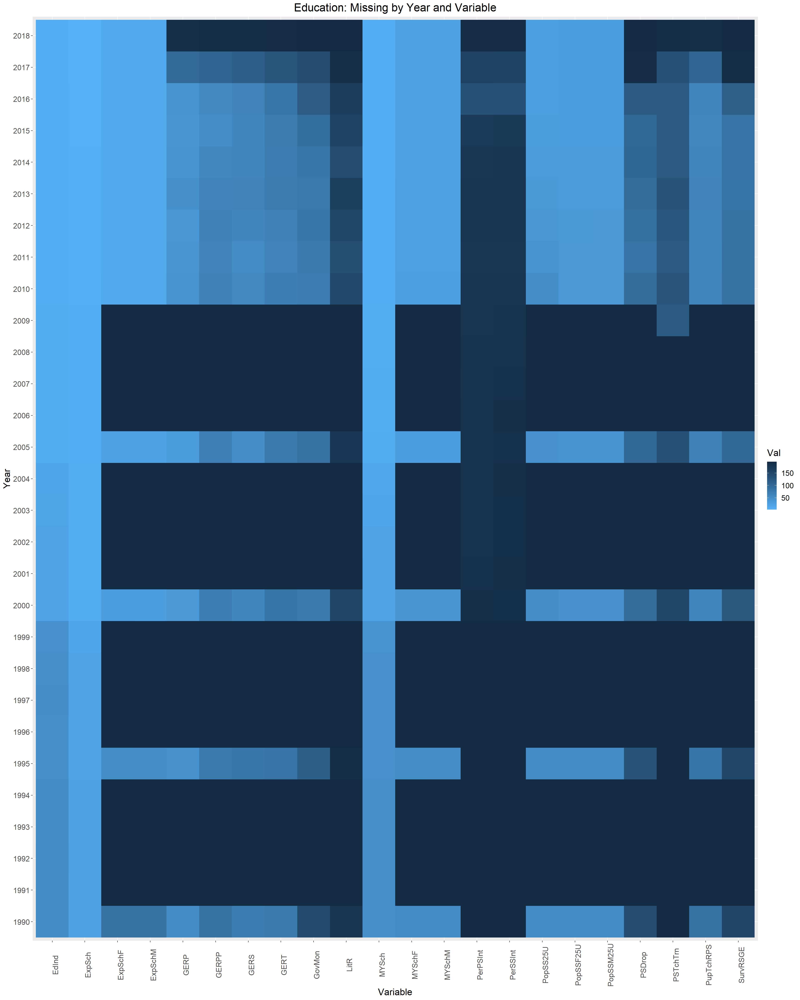

Chapter 4 Missing values
4.1 Inequality Missing Data
Below is a bar plot showing the count of missing data per feature.

The above shows that for 7 of the 9 features, 20-25% of its entries are missing.
Since there is only 9 years and 9 features, a heat map is an appropriate to visualize combinations of missing data between Year and the different features to see if there’s any relationship in proportion of missing data for a specific feature across years (and vice versa).
The above heat map is drawn such that the feature with the largest proportion of missing data is at the bottom. From the heat map, it looks like 2011 and 2012 have the highest rates of missing data for every features aside from “Inequality in life expectancy (%)” and “Inequality-adjusted life expectancy index”. However, note that the proportion of missing data peaks at around 0.3 and most feature-year combinations have proportion of missing data that are below 0.2, which are manageable.
The below is the aggregate sum of number of missing entries over all features for each country, filtering only the countries with at least one missing entry.

It looks like 100% of the data is missing for Saint Kitts and Nevis, Liechtenstein, and Dominica. In addition, >87.5% of the data is missing for Nauru, Marshall Islands, Andorra, and Tuvalu. All of these countries are extremely small (most are islands) and it is possible that Inequality data is not collected nationally and/or data collection is not prioritized by the relevant international organizations.
Due to the large volume of countries, a heat map is not an effective way to visualize the relationship in proportion of data missing between countries and features. A parallel coordinate plot was drawn instead to determine if there’s any relationship between features and proportion of missing data for different countries.
Most countries appear to not be missing data for “Inequality-adjusted life expectancy index” and “Inequality in life expectancy (%)”
For remaining features, at intervals of around 0.1 from 0 to 1, there are clusters of countries missing that proportion of data for each feature.
There is a small number of countries missing data for most to all of the features (flat line at the top), these are likely the smaller countries found in the bar charts.
For “Coefficient of Human Inequality”, “Inequality-adjusted HDI (IHDI)”, and “Inequality-adjusted HDI (IDHI)”, countries generally miss the same proportion of the data for all 3 features, indicating that they may be related.
For “Inequality-adjusted income index” and “Inequality in income (%)”, countries generally miss the same proportion of the data for these two features; they are likely related. In addition, countries generally are missing an equal to or smaller proportion of data for these two features than the 3 features mentioned in the previous bullet.
For “Inequality-adjusted education index” and “Inequality in education (%)” countries generally miss the same proportion of the data for these two features; they are likely related.
4.2 Human Security Missing Data
A significant proportion of data in the Human.Security dataframe is missing. Largely, this seems to be the product of uneven variable tracking. Homelessness due to natural disasters seems to be tracked in most countries on a yearly basis between 1990 and 2018. By contrast, Homicide rate was recorded only in 1990, 1995, 2000, 2005, and yearly from 2010 to 2017. As another exmaple, suicide rate for both males and females were recorded only in the years 2000, 2010, 2015, and 2016.
## [1] "X1990" "X1991" "X1992" "X1993" "X1994" "X1995" "X1996" "X1997" "X1998" "X1999" "X2000" "X2001" "X2002" "X2003" "X2004" "X2005" "X2006" "X2007" "X2008" "X2009" "X2010" "X2011" "X2012"
## [24] "X2013" "X2014" "X2015" "X2016" "X2017" "X2018"## [1] "X1990" "X1995" "X2000" "X2005" "X2010" "X2011" "X2012" "X2013" "X2014" "X2015" "X2016" "X2017"## [1] "X2000" "X2010" "X2015" "X2016"## [1] "X2000" "X2010" "X2015" "X2016"Importantly, data also appears to be missing among outlying island countries and countries in the African continent. For example, the chart below notes missing Homicide data.
A notable chunk of countries (obs. numbers 50-100) seem to be missing data between 1990 and 2005. However, the largest amount of missing data seems to be concentrated in observations 150 to 192, which includes Micronesia and many of the countries on and around the African continent (ie. Nigeria, Sudan, Senegal).

This trend is not unknown in international data collection. Lower infrastructural development renders data collection difficult, and factors like human rights and humanitarian crises, political violence, and political instability can hinder data collection processes.
4.3 Education Missing Data
There are 87056 missing values in the entire data frame.
## [1] 87056Of those most of the observations seem to concentrated before 2010, where the number of missings declined down to 1 thousand each year, until recently in 2017, and 2018, which saw gains towards 3000.
## # A tibble: 29 x 2
## # Groups: Year [29]
## Year n
## <dbl> <int>
## 1 1990 2320
## 2 1991 4072
## 3 1992 4074
## 4 1993 4072
## 5 1994 4072
## 6 1995 2183
## 7 1996 4062
## 8 1997 4064
## 9 1998 4062
## 10 1999 4054
## 11 2000 1688
## 12 2001 3985
## 13 2002 3980
## 14 2003 3975
## 15 2004 3970
## 16 2005 1595
## 17 2006 3956
## 18 2007 3954
## 19 2008 3953
## 20 2009 3801
## 21 2010 1477
## 22 2011 1410
## 23 2012 1462
## 24 2013 1496
## 25 2014 1444
## 26 2015 1436
## 27 2016 1481
## 28 2017 2073
## 29 2018 2885It looks like missings arer concentrated in the smaller countries.
## # A tibble: 190 x 2
## Country Count
## <chr> <int>
## 1 Marshall Islands 635
## 2 Turkmenistan 631
## 3 Micronesia (Federated States of) 628
## 4 Guinea-Bissau 614
## 5 South Sudan 611
## 6 Vanuatu 592
## 7 Palau 584
## 8 Equatorial Guinea 575
## 9 Antigua and Barbuda 565
## 10 Kiribati 564
## 11 Liechtenstein 555
## 12 Montenegro 554
## 13 Timor-Leste 550
## 14 Bahamas 548
## 15 Bosnia and Herzegovina 548
## 16 Angola 546
## 17 Nigeria 546
## 18 Saint Kitts and Nevis 545
## 19 Dominica 538
## 20 Comoros 535
## 21 Haiti 532
## 22 Libya 531
## 23 Grenada 529
## 24 Papua New Guinea 524
## 25 Iraq 521
## 26 Andorra 520
## 27 Saint Vincent and the Grenadines 520
## 28 Eritrea 518
## 29 Solomon Islands 517
## 30 Gabon 514
## 31 Fiji 506
## 32 Liberia 504
## 33 Samoa 504
## 34 Singapore 504
## 35 Trinidad and Tobago 503
## 36 Djibouti 501
## 37 Yemen 498
## 38 Ethiopia 494
## 39 Seychelles 491
## 40 Sudan 485
## 41 Nicaragua 484
## 42 Lebanon 483
## 43 Zimbabwe 483
## 44 Canada 482
## 45 Central African Republic 482
## 46 Japan 480
## 47 Namibia 479
## 48 Chad 478
## 49 Afghanistan 477
## 50 Kenya 477
## 51 Myanmar 477
## 52 Congo 475
## 53 Oman 475
## 54 Suriname 475
## 55 Bhutan 474
## 56 Syrian Arab Republic 474
## 57 Venezuela (Bolivarian Republic of) 473
## 58 Jordan 472
## 59 Paraguay 472
## 60 Tonga 471
## 61 Cabo Verde 469
## 62 Guinea 469
## 63 Guyana 469
## 64 Georgia 468
## 65 Madagascar 468
## 66 Armenia 467
## 67 Zambia 467
## 68 Botswana 466
## 69 Philippines 466
## 70 Congo (Democratic Republic of the) 465
## 71 Sao Tome and Principe 464
## 72 Sierra Leone 464
## 73 United States 464
## 74 Luxembourg 463
## 75 Brazil 461
## 76 Ireland 458
## 77 Saudi Arabia 458
## 78 Bangladesh 457
## 79 New Zealand 457
## 80 United Arab Emirates 457
## 81 Russian Federation 456
## 82 Iceland 455
## 83 Saint Lucia 455
## 84 Germany 454
## 85 Egypt 453
## 86 Maldives 453
## 87 Australia 452
## 88 United Kingdom 451
## 89 Uzbekistan 451
## 90 Argentina 450
## 91 Jamaica 450
## 92 Tanzania (United Republic of) 450
## 93 India 449
## 94 Malawi 449
## 95 South Africa 448
## 96 China 447
## 97 Palestine, State of 446
## 98 Switzerland 446
## 99 Uganda 446
## 100 Barbados 445
## 101 Honduras 445
## 102 Romania 445
## 103 Serbia 444
## 104 Belgium 443
## 105 Turkey 443
## 106 Croatia 442
## 107 Greece 442
## 108 Bolivia (Plurinational State of) 440
## 109 France 440
## 110 Denmark 439
## 111 Burkina Faso 438
## 112 Cyprus 438
## 113 Czechia 438
## 114 Thailand 438
## 115 Sweden 437
## 116 Uruguay 437
## 117 Algeria 436
## 118 Bulgaria 436
## 119 Italy 435
## 120 Panama 434
## 121 Slovakia 434
## 122 Chile 433
## 123 Guatemala 432
## 124 Mauritania 432
## 125 Albania 431
## 126 Dominican Republic 430
## 127 Mali 430
## 128 Lithuania 429
## 129 Malta 429
## 130 Austria 428
## 131 Mozambique 427
## 132 Gambia 426
## 133 Indonesia 426
## 134 Israel 426
## 135 Netherlands 426
## 136 Côte d'Ivoire 425
## 137 Tunisia 425
## 138 Ukraine 425
## 139 El Salvador 424
## 140 Iran (Islamic Republic of) 424
## 141 Latvia 424
## 142 Sri Lanka 424
## 143 Viet Nam 423
## 144 Bahrain 422
## 145 Cameroon 422
## 146 Kuwait 422
## 147 Hong Kong, China (SAR) 421
## 148 Eswatini (Kingdom of) 420
## 149 Qatar 420
## 150 Belarus 419
## 151 Belize 419
## 152 Cambodia 419
## 153 Azerbaijan 418
## 154 Benin 418
## 155 Mongolia 418
## 156 Tajikistan 417
## 157 Togo 417
## 158 Brunei Darussalam 416
## 159 Norway 416
## 160 Ecuador 415
## 161 Costa Rica 414
## 162 Pakistan 414
## 163 Kazakhstan 413
## 164 Peru 412
## 165 Lesotho 411
## 166 Portugal 411
## 167 Estonia 410
## 168 Spain 409
## 169 Burundi 408
## 170 Nepal 408
## 171 Moldova (Republic of) 406
## 172 Morocco 406
## 173 Slovenia 406
## 174 Ghana 405
## 175 Poland 405
## 176 Hungary 404
## 177 Kyrgyzstan 404
## 178 Korea (Republic of) 403
## 179 Niger 402
## 180 Cuba 401
## 181 Finland 401
## 182 Colombia 399
## 183 Malaysia 397
## 184 Rwanda 397
## 185 Senegal 397
## 186 Lao People's Democratic Republic 395
## 187 North Macedonia 393
## 188 Mexico 384
## 189 Mauritius 377
## 190 The former Yugoslav Republic of Macedonia 116By variable it looks the number of missings varies quite a bit from 217, all the way up to >5000
## HDI Rank (2018) Country Year EdInd ExpSch ExpSchF ExpSchM GovMon GERPP GERP GERS
## Min. : 1.00 Length:5510 Min. :1990 Min. :0.0810 Min. : 2.10 Min. : 0.60 Min. : 2.60 Min. : 0.800 Min. : 0.00 Min. : 22.0 Min. : 5.00
## 1st Qu.: 48.00 Class :character 1st Qu.:1997 1st Qu.:0.4380 1st Qu.: 9.90 1st Qu.:10.40 1st Qu.:11.00 1st Qu.: 3.300 1st Qu.: 27.50 1st Qu.: 97.0 1st Qu.: 55.00
## Median : 94.00 Mode :character Median :2004 Median :0.6080 Median :12.10 Median :12.90 Median :12.50 Median : 4.500 Median : 60.00 Median :102.0 Median : 87.00
## Mean : 94.71 Mean :2004 Mean :0.5798 Mean :11.78 Mean :12.56 Mean :12.54 Mean : 4.515 Mean : 57.76 Mean :101.4 Mean : 78.65
## 3rd Qu.:142.00 3rd Qu.:2011 3rd Qu.:0.7150 3rd Qu.:14.00 3rd Qu.:15.20 3rd Qu.:14.50 3rd Qu.: 5.500 3rd Qu.: 87.00 3rd Qu.:108.0 3rd Qu.:100.00
## Max. :189.00 Max. :2018 Max. :0.9460 Max. :23.30 Max. :23.30 Max. :22.50 Max. :12.800 Max. :169.00 Max. :152.0 Max. :164.00
## NA's :546 NA's :217 NA's :3306 NA's :3307 NA's :4348 NA's :3999 NA's :3725 NA's :3961
## GERT LitR MYSch MYSchF MYSchM PerPSInt PerSSInt PopSSF25U PopSSM25U PSDrop PSTchTrn
## Min. : 0.0 Min. : 22.30 Min. : 0.300 Min. : 0.100 Min. : 0.500 Min. : 0.00 Min. : 1.00 Min. : 0.40 Min. : 2.00 Min. : 0.00 Min. : 15.0
## 1st Qu.: 11.0 1st Qu.: 77.97 1st Qu.: 4.800 1st Qu.: 4.500 1st Qu.: 6.100 1st Qu.: 91.50 1st Qu.: 96.00 1st Qu.: 27.60 1st Qu.: 36.90 1st Qu.: 2.20 1st Qu.: 71.0
## Median : 30.0 Median : 92.40 Median : 7.800 Median : 8.100 Median : 8.400 Median :100.00 Median :100.00 Median : 56.30 Median : 59.50 Median : 7.65 Median : 90.0
## Mean : 35.4 Mean : 83.95 Mean : 7.464 Mean : 7.559 Mean : 8.357 Mean : 85.12 Mean : 89.47 Mean : 54.58 Mean : 59.58 Mean :15.75 Mean : 83.5
## 3rd Qu.: 56.0 3rd Qu.: 96.40 3rd Qu.:10.100 3rd Qu.:10.600 3rd Qu.:10.900 3rd Qu.:100.00 3rd Qu.:100.00 3rd Qu.: 81.30 3rd Qu.: 85.80 3rd Qu.:24.80 3rd Qu.: 99.0
## Max. :126.0 Max. :100.00 Max. :14.100 Max. :13.800 Max. :14.600 Max. :100.00 Max. :100.00 Max. :100.00 Max. :100.00 Max. :75.20 Max. :100.0
## NA's :4127 NA's :5118 NA's :497 NA's :3353 NA's :3355 NA's :5184 NA's :5217 NA's :3441 NA's :3443 NA's :4532 NA's :4780
## PISAMth PISARead PISAScn PupTchRPS SurvRSGE
## Min. : 15.0 Min. : 6.00 Min. : 6.00 Min. : 6.00 Min. : 5.00
## 1st Qu.: 71.0 1st Qu.:15.00 1st Qu.:15.00 1st Qu.:15.00 1st Qu.: 79.00
## Median : 90.0 Median :22.00 Median :22.00 Median :22.00 Median : 91.00
## Mean : 83.5 Mean :25.36 Mean :25.36 Mean :25.36 Mean : 86.52
## 3rd Qu.: 99.0 3rd Qu.:33.00 3rd Qu.:33.00 3rd Qu.:33.00 3rd Qu.: 97.00
## Max. :100.0 Max. :90.00 Max. :90.00 Max. :90.00 Max. :100.00
## NA's :4780 NA's :3998 NA's :3998 NA's :3998 NA's :4522